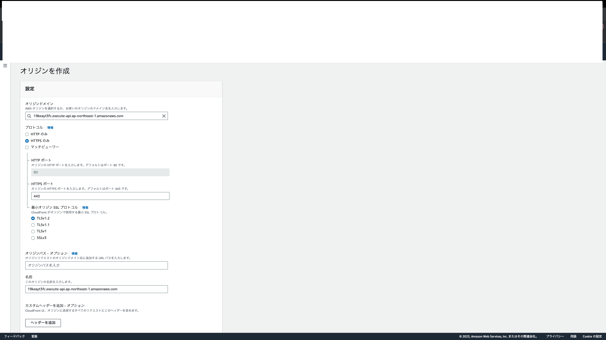

13. CloudFront¶
13.1. CloudFrontの設定項目¶
Cloud Frontにいては、設定項目が多い。大きくは以下の3箇所の設定が必要
Distribution:Cloud Frontを指し示すもの
Behavior:パスの設定
Origin:バックエンドのオリジンを指定するもの
13.2. 静的コンテンツのホスティングと配信¶
13.2.1. S3の設定¶
バケットを作成する
設定については、特に変更せず、デフォルトでOKファイルのアップロード
事前に準備した静的コンテンツをS3にアップロードする
13.2.2. Clouf Frontの設定¶
13.2.2.1. Distributionの作成¶
Cloud Frontの画面からディストリビューションの作成を押下
13.2.2.2. Originの設定¶
先ほど作成したS3-Buckerをオリジンとして設定
バケットへのアクセスはOAI(Origin Access Identity)を利用して新しいOAIを作成
13.2.2.3. Behaviorの設定(CachingDisabled)¶
HTTPSのみを許可したいので
Redirect HTTP to HTTPSを選択キャッシュポリシーに
CachingDisabledを選択(キャッシュをしない設定)
13.2.2.4. Distributionの設定¶
カスタムドメイン設定やカスタムSSL証明書の設定ができるが今回はしない
デフォルトルートとして、S3のルートにあるindex.htmlを指定
13.2.2.5. 動作確認(キャッシュをしていない)¶
作成されたCloudFrontのディストリビューションドメイン名
https://xxxxxx.cloudfront.net
をブラウザで検索するとindex.htmlが表示される
ブラウザのディベロッパーツールのネットワークタブを確認して、キャッシュの無効化を押下してから再アクセスする。
レスポンスヘッダーのx-cacheを確認するとCloudfrontのキャッシュを取得したかを確認できる
13.2.3. Behaviorのポリシー設定(Cache)¶
CloudFrontのコンソール画面のナビゲーションペインからポリシーを選択すると、AWSのマネージドポリシーが表示される。
先ほど選択した、CachingDisabledはTTLが全て0となっているのでCloudFrontでキャッシュをしない設定となっていた。
13.2.3.1. Cache Policyの作成¶
新たにカスタムポリシーを作成する。ポリシーの作成を押下して以下の項目を設定していく
名前
TTL
キャッシュキー

13.2.3.2. ビヘイビアで別のパスを作成¶
ディストリビューションを選択して、ビヘイビアのタブから新しいパスを作成するためにビヘイビアの作成を押下
前回同様にビヘイビアの設定をしていく
パスパターン: `static/*'
オリジン: s3のバケット
HTTPSのみを許可したいので
Redirect HTTP to HTTPSを選択キャッシュポリシーに先ほど作成したポリシーを選択
新しいビヘイビアが作成されるが、優先順位に従って、評価がされることになる
13.2.3.3. 動作確認（キャッシュをしている）¶
レスポンスヘッダーのx-cacheを確認するとCloudfrontのキャッシュを取得したかを確認できる。
また処理時間に関しても、短くなっている
13.3. 動的コンテンツのホスティングと配信¶
13.3.1. 動的コンテンツの作成¶
LambdaとAPI GWを利用して、ユーザーが投げてきた文字列を英訳するAPIを作成
リソースは
apiクエリパラメータは
input_text
13.3.2. Origin Request Policyの作成¶
動的コンテンツを扱う場合の注意点として、CloudFrontはリクエストからの情報をフィルタリングして、オリジンに情報を渡すため、明示的に渡すことを指定した情報しか渡さない。 なので、クエリパラメータについて明示的に渡す設定を追加する必要がある。
CloudFrontのポリシーから、Origin Request Policyを選択
クエリ文字列でホワイトリストとして`input_text'を追加する
13.3.3. Cloud FrontとAPI GWの接続¶
Cloud Frontのディストリビューションで、オリジンを作成する
オリジンドメインにAPI GWのURLを入力する

次に、ビヘイビアを作成する
パスパターンにはAPI GWのリソースであるapiとして、オリジンは先ほど作成したAPI GWを指定する。
キャッシュポリシーに関しては、動的コンテンツのためCachingDisabledとする。
オリジンリクエストポリシーは先ほど作成した、クエリ文字列を渡すものを指定する。